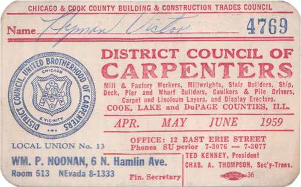

I thought I knew everything I could possibly know about my great-grandfather Hyman Victor. He’d been the sole object of my genealogical fascination a few years ago, and I was pretty confident I’d exhausted all my sources about his life.
Until this summer, when I got an email from a woman named Sandy Leff, the granddaughter of Hyman’s third (and final) wife Anna Rubin. Sandy told me that her father, now 88, was in the flea market/schmatte business in Chicago. His basement was full of items collected over the decades and a friend from the flea market was helping them clear it all out.
In the process, they came across a box containing a menorah, a tablecloth, a prayer shawl, a yarmulke, candelabras, three prayer books, and two tickets to high holiday services in 1969. It also contained a union card and dues book for Hyman Victor, so she knew the contents must have belonged to her grandmother and had been sitting in the basement since her death in 1970.

Sandy remembered Hyman. She knew him from the age of eight, when he married her grandmother, until his death when she was 12. On a lark, she typed Hyman’s name into Google and found my website about his life. Then she emailed me, introduced herself, and said she wanted me to have the documents. It was basically the fulfillment of a geeky genealogical fantasy.
The documents were in fantastic condition. I always knew that Hyman was a carpenter. I didn’t know he was a lifelong member of the United Brotherhood of Carpenters and Joiners of America. The dues book shows he joined in 1914, a year after immigrating to Chicago from the Pale of Settlement, and remained a member up until his death in 1960. The union, I imagine, would have provided him access to jobs, some degree of legal protection, and eventually a pension.

When Sandy and I spoke again it was clear she’d caught a bit of the genealogy bug. She found more documents: the ketubah for their wedding, Anna’s naturalization papers, and a series of handwritten Yiddish letters, which neither of us can read. She also produced a rare photo of Hyman, seated next to Anna some time around 1959.
All in all, an amazing and unexpected contribution to my collection, and an uplifting turn of events in light of Hyman’s recent gravestone photo theft. So I thank you, Sandy. May you find more historical treasure in your father’s basement.
For more about the offspring of Hyman Victor see:
A Letter From Vietnam.
a triumph for genealogy geekery and, naturally, the internet. joiner has to be the best occupation name ever.
Bless the internets. And bless Sandy Leff.
This is wonderful!
So cool!!! And I can totally appreciate your excitement — I had my own moment this spring when I found the archives for the (no longer extant) synagogue my great-grandfather founded — including records in his own hand dating back to 1900.
I’m still really sickened about the gravestone theft…
great story. let me know if you need a hand with those yiddish letters
I finally got to look at this! WOW. It’s really the kind of “there’s someone out there” magic that the Internet makes us believe in.
Elliot,
Hopefuuly you remember me. I am the oldest living cousin from the Victor family. I am your dad’s 1st cousin. This piece brought tears to my eyes. I had just spent 45 minutes catching up with your mom and dad. I am so proud of the work you are doing and I would love for you to do more research on the Victor girls and their families.. Love cuz Carol
I stumbled onto this site as I was looking up eruv and experienced a great moment in surfing.
Gorgeous photos and I’m going to visit your website.